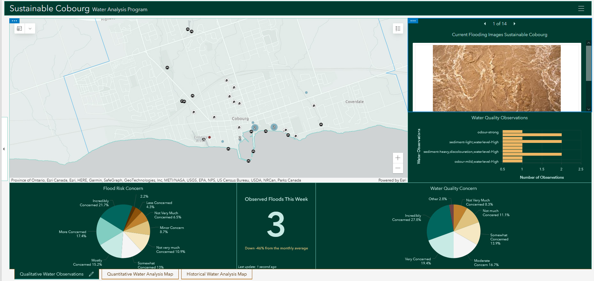
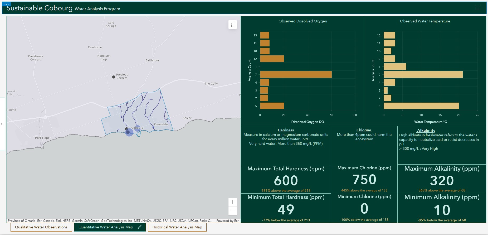
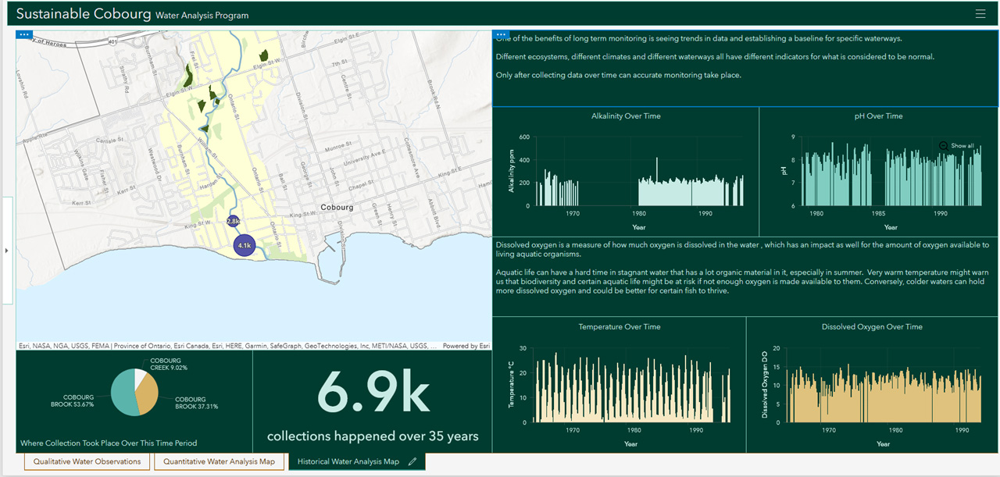

Dashboard
The dashboard is broken down into three pages to summarize the data.
Deliverable 1a. The first page of the Dashboard shows flood reporting and general concerns about water quality data. Using the interactive map, the user is able to see statistics about certain points and areas.

Deliverable 1b. The second page of the Dashboard showing quantitative water quality data. This is data collected from the water quality survey that has been designed to be used in the field/on site. The interactive map associated with the page allows you to see where data has been collected and what parameters were used.

Deliverable 1c. The third and final page of the Dashboard shows historical water quality data as downloaded from the DataStream website. This page is to help provide context to water quality through time. The interactive map on this page shows a landuse map around the Cobourg Brook-- a local water source that has been the focus of attention on water quality and potential flooding risks.
